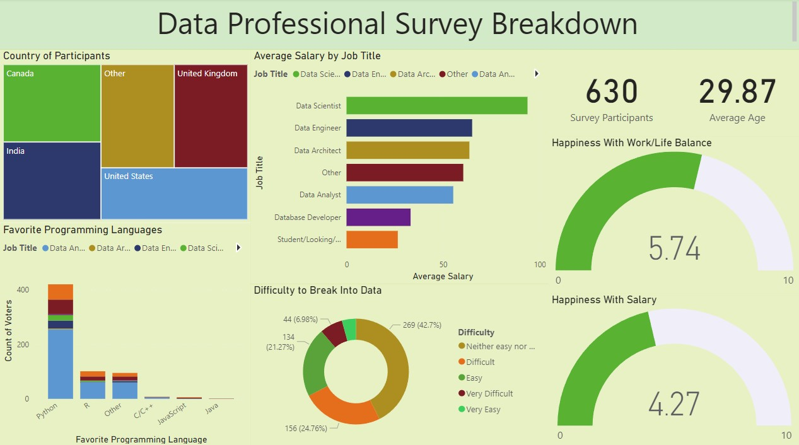
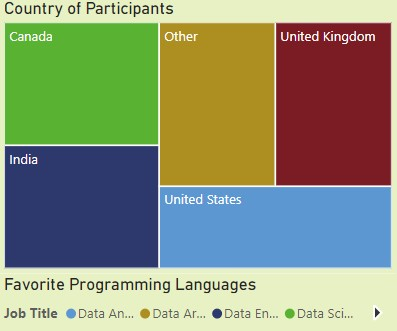
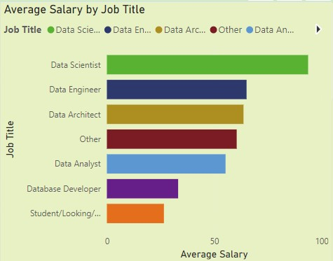
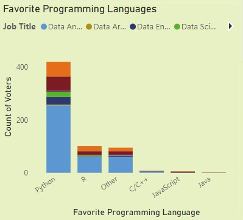
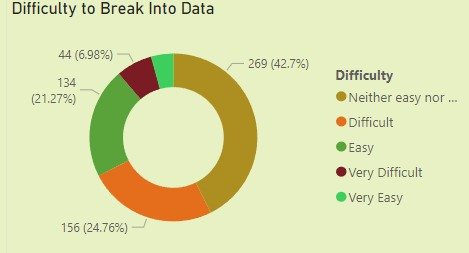
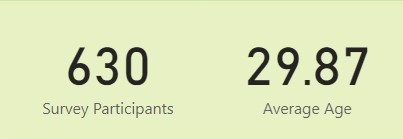
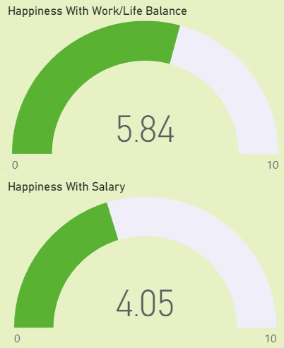

Data Professional Survey Breakdown
This project was created to visualize a breakdown from an online survey where 630 data workers answered 13 questions about their current jobs and careers.
The data obtained was cleaned and formatted using the Power Query Editor, some columns where deleted, normalized and some calculated columns were added to better visualize the data.
After data was formatted and ready to use, the dashboard was created using some of the questions that could drive into meaningful insights, considering also an easy navigation through the dashboard to make it easier to navigate the data and discover more insights.
Visualizations
Here's every element of the dashboard explained:
Country of Participants
User can filter the dashboard for different countries through the first dashboard element.
Average Salary by Job Title
In this chart, user can visualize calculated average salaries by data job type.
Favorite Programming Languages
Data workers and their favorite data language.
Difficulty to Break Into Data
This chart visualizes the difficulty perceived by data workers when breaking into a data related job.
Survey Participants and Average Age Cards
Two cards to easily observe how many participants were surveyed and their average age.
Happines With Work/Life Balance and Salary
An estimated with the happiness from data workers related to their salary and life/work balance on a scale from 0 to 10.
Breakdown insights
- Survey was answered by 381 data analysts (60% of the total participants).
- Data scientists are the most happy with their salary while Database developers are the most happy with their life/work balance.
- All data workers perceived a neutral difficulty when looking for a data related job.
- Most data workers surveyed were located in USA.
- Students and people looking for data related jobs perceive a very high difficulty to break into data jobs.